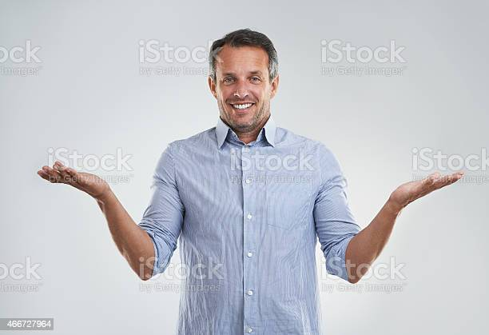

Acerca nuestro
Bienvenido a Patitas Felices. Nuestro objetivo es llevar mascotas sin hogar a los hogares. Ayudamos a más de 100 refugios de animales, sociedades humanitarias, grupos de rescate de mascotas y agencias de adopción de mascotas a anunciar sus mascotas sin hogar a millones de adoptantes al mes, todo de forma gratuita. Estamos aquí por tí Nuestra misión colectiva es conectar a los futuros padres de mascotas con la mascota adecuada para ellos. Pero no nos detenemos ahí: también brindamos información útil y una gran cantidad de recursos para ayudar a los adoptantes a tener éxito en su nuevo viaje como padres de mascotas. Consultenos, también, para obtener asesoramiento sobre todo lo que lo ayudará a dominar a su mascota, desde tareas pendientes de los padres de mascotas hasta reseñas de productos y consejos de capacitación.
Nuestro Equipo
Sebas
El doctor de los michinos y los perrunos
Lean
Listo para manejar el rebaño
Agus

La doctora de los michinos y los perrunos
Guille
Listo para salir al rescate
Nuestros Valores
Empatía
Hay que entender la situacion de estos seres, debemos estar siempre al rescate de ellos, no pueden quedar abandonados
Positividad
No hay mal que por bien no venga, siempre habra una persona dispuesta a ayudarte
Conciencia
Debemos ser conscientes de que dejar abandonados a nuestras mascotas, habla mal de nosotros
Solidaridad
Solidaridad total con estos animales dejados al abandono.